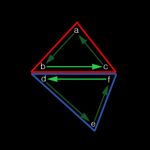
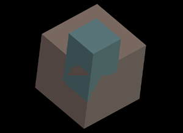
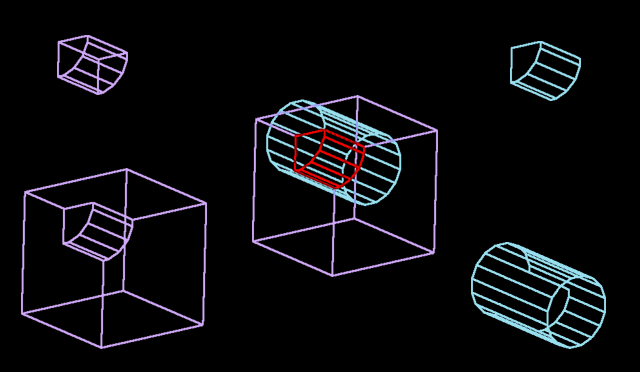
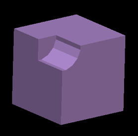

|
Constructive Solid Geometry
Question submitted by (13 November 2000)

|
 |
|
 |
| |
I have a question which I hope you will be able to answer for me (or
at
least point me in the right direction). It's to do with Constructive Solid
Geometry. Im currently writing an editor for my engine which is very similar
in most respects to worldcraft. Now what I need to do is to have the ability
to CARVE one object from another, for example, if I have a solid cube, and i
place a cylinder partially inside that cube, and hit CARVE, it will subtract
the shape of that cylinder from the cube. This will be entirely in the
editor, so i need to know how to split my geometry/faces up to subtract (and
maybe even add at a later date) brushes from/to other geometry. The only
example I have ever seen which touches on this subject, uses BSP trees to do
a lot of the work, but I'm not using BSP trees at all.
Hoping you can shed any light on this huge void of information =)
|
|
 |
|
 |
 |
|
|
| |
I wasn't using BSP trees with my work. Looking back, I'm not convinced that I
made the right decision. You should investigate them both and choose for
yourself. In the meantime, I'll explain what I know about the Laidlaw approach,
which does work very well.
Closed Objects
When calculating the result of a Boolean Operation, it's important that both
input objects (we'll call them A and B) are completely closed. By this, I mean
that each object must define a closed surface with shared (or "merged")
vertices. If your object contains a t-junction, your object is not technically
closed.
One way to determine if an object is closed, is to visit each polygon and make
sure that each edge of that polygon shares an edge with another polygon. If you
find an edge that's not shared, then the object is not closed. A shared edge is
defined as two vertices from one polygon are shared with two vertices from
another polygon, with opposite winding order between the two edges:

Figure 2: Opposite winding order for shared edges
Splitting Up The Objects
In order to perform any Boolean Operations, we need to bisect the polygons of
each object that intersect polygons of the other object. To clarify, this means
that if a polygon from object A intersects a polygon from object B, then both
polygons need to be bisected by one another: object A's polygon is bisected by
the plane of object B's polygon, and object B's polygon is bisected by the plane
of object A's polygon. The trick is, you only need to do this when there is an
actual intersection of the two polygons. There are a few ways of going about
doing this, but I'll describe a simple technique.
Start by making two copies of each object; we'll call these objects A' and B'.
We'll need to do this because we'll be replacing polygons with the multiple
pieces from any bisection that takes place.
Visit each polygon in A' and compare its bounding box with the bounding box from
each polygon in B'. If no overlap exists, then there's no intersection (and no
bisection is required.) If there is an overlap, go ahead and attempt to bisect
each polygon by the other polygon's plane. If both polygons end up being
bisected, then replace the original polygons from both objects with their
bisected counterparts. However, if one polygon or the other ends up not being
bisected, then leave both polygons unmodified.
A' and B' are now 'refined' for the Boolean Operations. The only thing left to
do is to figure out which polygons from each object is part of the result.
Quick Recap
At this point, we have two closed objects that probably share some volume
between the two (i.e. they're embedded.) At every point where the surfaces of
the two objects penetrate each other, we've sliced the surfaces of the objects.
What we need to do now is to remove the polygons that don't belong. Some
polygons are removed because they are interior polygons (i.e. polygons from one
object within the volume of the other object) and some polygons are removed
because they are exterior polygons. Depending on the Boolean Operation being
performed, one group of polygons or the other from each object will need to be
removed. For example, if we're trying to subtract object B from object A, part
of the task is to remove the polygons of object A that are within the volume of
object B.
If you want your Boolean operations to be robust, you'll also need to detect and
deal with shared polygons. Shared polygons are those polygons that overlap, as
in figure 3:

Figure 3: A situation where two embedded objects have polygons that share surface area.
Note that because these polygons lie on the same plane and overlap, we see
artifacts in the z- buffer. Also note that these polygons only partially
overlap. Fortunately, after we slice up our objects, we'll end up with polygons
that are completely overlapped, or not overlapped at all. Because of this, these
polygons are easy to detect (the normals and the D values of both polygons are
all within an epsilon distance.)
Removing The Unnecessary Polygons
The basic premise of this next step is to remove polygons from our refined
objects (A' and B') that correspond to the result. The result, in this case,
depends on the Boolean Operation being performed.
Here are the necessary operations:
Subtraction
Remove polygons from A' that are within the volume of B (remove shared).
Remove polygons from B' that are outside the volume of A (remove shared).
Invert the normals of the remaining polygons from B'.
Merge A' and B' to get the result.
Union
Remove polygons from A' that are within the volume of B (remove shared).
Remove polygons from B' that are within the volume of A (keep shared).
Merge A' and B' to get the result.
Intersection
Remove polygons from A' that are outside the volume of B (remove shared).
Remove polygons from B' that are outside the volume of A (keep shared).
Merge A' and B' to get the result.
Note 1: We are removing polygons from the refined objects A' or B' that are
within/outside the original objects (A or B). This is not a misprint. Doing this
increases our accuracy and reduces the amount of work required.
Note 2: In some cases we keep the shared polygons. This is necessary because the
shared polygons from the other object are kept, and we can't simply delete both
polygons (except in the case of subtraction.)
Before we can consider our overview of Boolean Operations complete, we need to cover one last topic...
Determining If A Polygon Is Interior, Exterior Or Shared
To determine if a polygon is within the volume of an object, we'll need a ray
that points outward away from the polygon, along it's normal. So we start by
creating a ray that has its direction set to the polygon's normal and originates
at the center of the polygon. We then locate all of the polygons from the test
object to see which ones the ray hits. Note that we're only interested in those
intersections that actually intersect the test object's polygons. This usually
means that we need to perform a ray/plane intersection, and then determine if
that point is within the boundaries of the test object's polygon.
Our goal is to locate the shortest intersection distance (usually referred to as
'time') that is positive. Negative distances can be ignored.
Note that if time is within an epsilon to zero (i.e. |time| < epsilon) then the
polygon is considered shared.
Once we know which polygon (from the test object) had the nearest intersection,
we need to know if that polygon is facing our input polygon or not. If it is,
(i.e. a dot product of the two normals is positive) then the input polygon is
inside the test object. If the dot product is negative, then the input polygon
is outside the test object.
It is quite possible that we might not find any intersection at all. This simply
means that our polygon is outside the test object.
Note that on occasion, a dot product will be near zero (|dot| < epsilon). In
these cases, it will be unclear as to weather the polygon is an interior or
exterior polygon. A solution to this is to randomly perturb the normal of the
ray slightly and try again. Because of this, it's wise to use the normal of the
input polygon in the dot product calculation, rather than the normal of the ray,
since the ray may have been perturbed.
This may seem like a rather extensive way to determine if a polygon is inside or
outside of an object, but it is necessary because this allows us to perform
Boolean Operations on non-convex objects.
Summary
Rather than typing a lot, I'm just going to add some more images, to help visualize what's going on...

Figure 4: Composite of a subtraction operation
Figure 4 shows a composite of an entire Boolean Operation after bisections. In
the upper-left corner, we have the interior (inside the cylinder) polygons of
the box. The lower left corner shows the exterior of the box. The upper-right
corner shows the interior (inside the box) of the cylinder and the lower-right
corner shows the exterior of the cylinder. The center of the image shows each of
the four pieces overlaid in their original positions with the interiors
highlighted in red.

Figure 5: The result of a subtraction operation using the pieces from figure 4.
Helpful Features
If you were implementing this for an editor, I would recommend adding a couple
other painless features. First, add a "split" operation. A split performs the
polygon bisections of an object by another object, but does nothing else. This
offers your artists a very unique way to tessellate an object for easy
manipulation.
Also, allow the Boolean Operation to keep either of the two input objects. If
you think of the operation in terms of: "sphere – box = result" then the Boolean
Operation usually calculates the result, and deletes the original objects.
However, when doing many Boolean Operations, it might be wise to keep one or the
other (or both) of the input objects.
In Closing
Writing code to perform Regularized Boolean Set Operations is not trivial.
Making it robust is tricky to say the least. And because of the need for
epsilons, you may find that you will never get it exactly to your liking.
However, know that even the advanced modeling packages today can result in
disappearing objects as a result from accuracy loss during Boolean Operations.
Response provided by Paul Nettle
|
|
|
|
|
This article was originally an entry in flipCode's Ask Midnight, a Question and Answer column with Paul Nettle that's no longer active.
|


 Re: Constructive Solid Geometry by Matt
Re: Constructive Solid Geometry by Matt